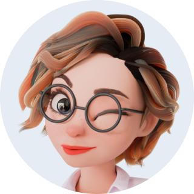
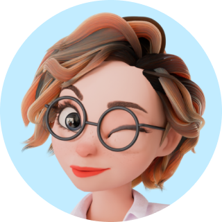

Warm-up


Loading examiner audio…
Please wait — nothing to click yet
3
0:00 / 0:00
1:00
Written notes are not allowed.
0:00
Note: Your audio answer must not exceed 1 minute.
All parts complete
You’ve finished all parts of the speaking test. Submit when you’re ready.